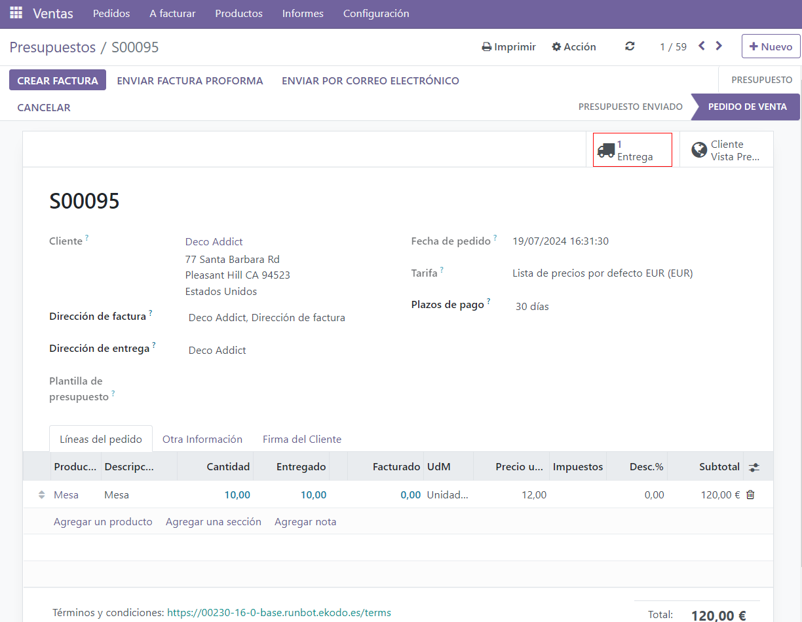
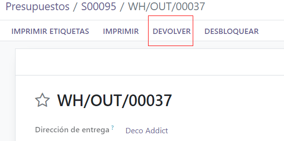
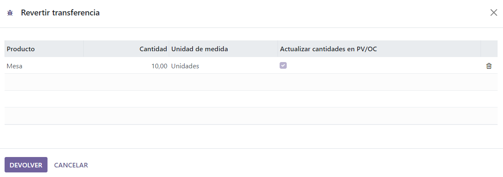
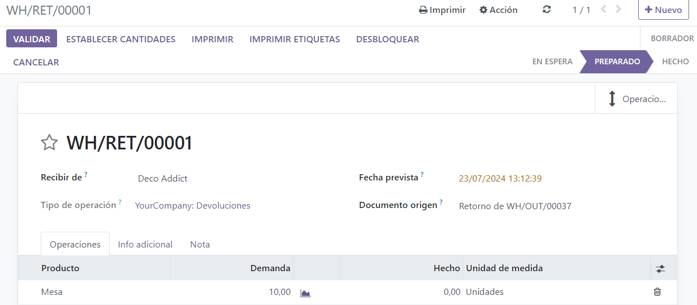
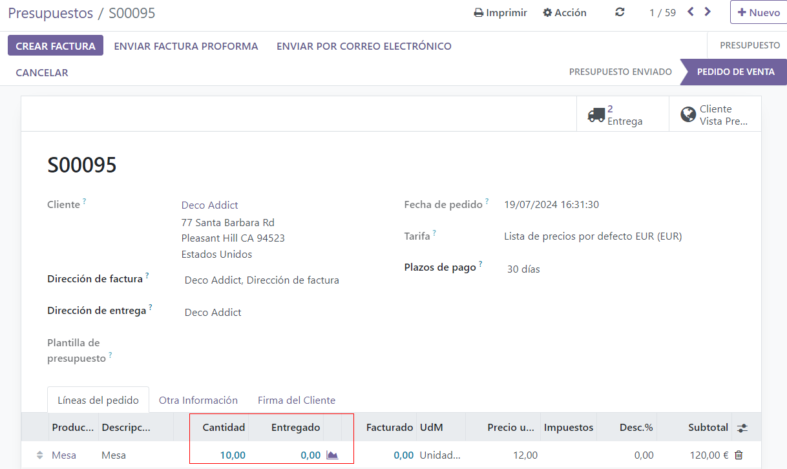
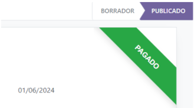
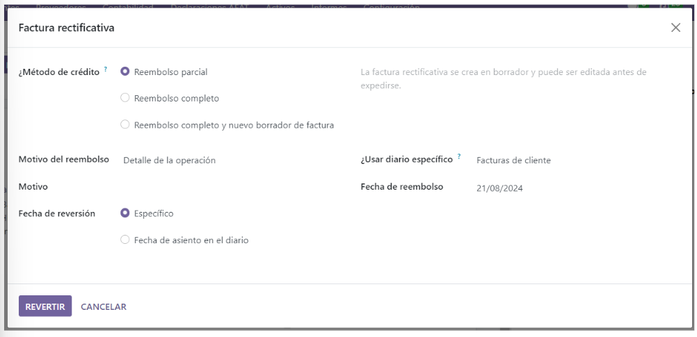
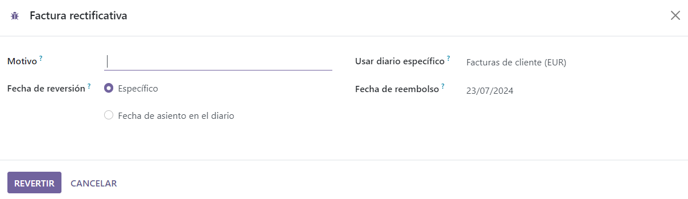

Returns and refunds¶
The Odoo Sales app provides two different ways to process returns. The method used depends on whether or not an invoice has been sent.
Before invoicing¶
Returns are completed using Reverse Transfers when a customer decides to return a product before an invoice has been sent or validated.
Note
In order to use Reverse Transfers, the Inventory app must be installed.
To start a return before invoicing, navigate to the app, select the desired sales order, and click on the Delivery smart button to open the associated delivery order.
On the validated delivery order, click Return.
This opens a Reverse Transfer pop-up window.
By default, the Quantity matches the validated quantities from the delivery order. Update the quantities, if necessary. Click on the 🗑️ (trash) icon next to a line item to remove it from the return.
Next, click Return to confirm the return. This generates a new warehouse operation for the incoming returned product(s).
Upon receiving the return, the warehouse team validates the warehouse operation by clicking Validate. Then, on the original sales order, the Delivered quantity updates to reflect the difference between the initial validated quantities and the returned quantities.
When an invoice is created, the customer receives an invoice only for the products they are keeping, if any.
After invoicing¶
Sometimes, customers return an item after they receive and/or pay for their invoice. In these cases, a return using only Reverse Transfers is insufficient since validated, or sent, invoices cannot be changed.
However, Reverse Transfers can be used in conjunction with Credit Notes to complete the customer’s return.
To start a return after invoicing, navigate to the relevant sales order in the app.
If there is a payment registered on the sales order, the payment details appear in the chatter, and the invoice (accessible through the Invoices smart button) has a green In Payment banner.
From the sales order, click on the Delivery smart button to view the validated delivery order. Then, click Return to open the Reverse Transfer pop-up window.
Next, edit the Product and/or Quantity, as needed for the return. Then, click Return. This generates a new warehouse operation for the incoming returned product(s), which is validated by the warehouse team once the return is received by clicking Validate.
Then, on the sales order, the Delivered quantity updates to reflect the difference between the initial validated quantities and the returned quantities.
To process a refund, navigate to the relevant invoice (from the sales order, click on the Invoices smart button). Then, click the Credit Note button at the top of the validated invoice.
Doing so reveals a Credit Note pop-up form.
Start by entering a Reason displayed on Credit Note and a specific Journal to process the credit. Then, select a specific Reversal Date.
After the information is filled in, click Reverse or Reverse and Create Invoice. Then, edit the draft, if needed.
Lastly, click Confirm to confirm the credit note.
When complete, a blue banner reading: You have outstanding credits for this customer. You can allocate them to mark this invoice as paid. appears at the top of the page.
See also